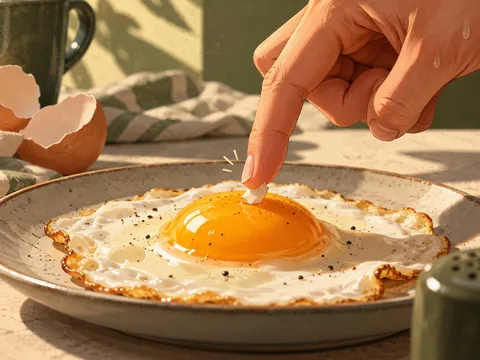
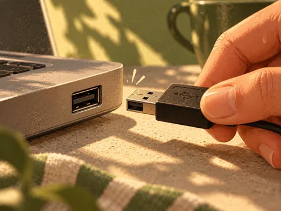
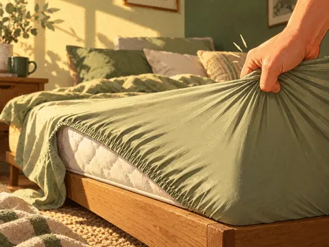
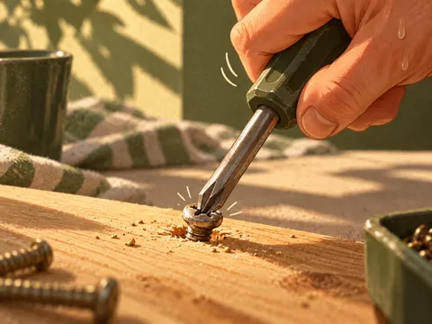
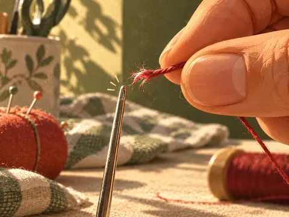
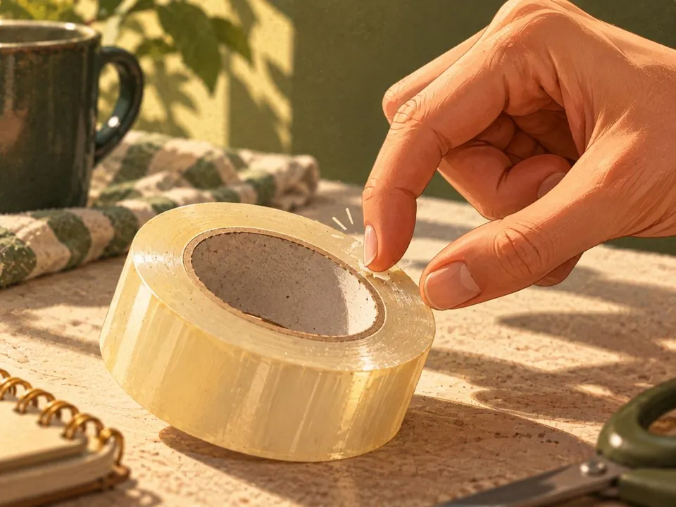

01 / EL ORIGINAL

Pequeñas tareas de todos los días, convertidas en juegos. Nada extraordinario: apenas una colección de cosas simples para resolver.

Encontrá el extremo del rollo y despegá un poco de cinta.

Conectá un cable USB a su puerto.

Acomodá las cuatro esquinas de una sábana ajustable.

Ajustá un tornillo con un destornillador.

Pasá la punta del hilo por el ojo de una aguja.
